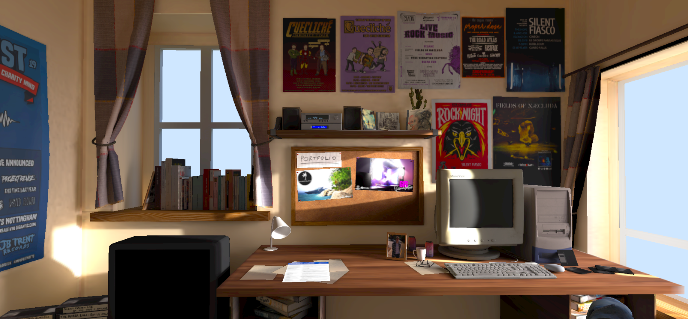

I am a programmer, physics graduate, musician and creative technologist.
I'm a bilingual (English/French) software developer with several years of
international experience in Python
development and consultancy.
I have professional experience in backend Python development, process automation,
Bash scripting, and data
analysis in Python, R, MySQL and Excel, across a variety of sectors.
In my free time, I enjoy performing music and exploring technological applications to the arts,
with a
passion for 3D modelling, digital art, immersive web development and lighting design.
resumé
- professional experience -
Software Developer
Kaizen Solutions
Developed and implemented mathematical ageing models into backend Python code, to predict ageing and
facilitate preventative maintenance of industrial electronics assets.
Developed automated frontend (Cypress) and backend (Pytest) tests to maintain code quality standards.
Introduced new standards of ticket writing and management to improve the efficiency, robustness and
traceability of work accomplished.
Introduced new frontend functionality using PyQt.
Mentored junior team members on Git best practices in branched workflows.
Software Developer
Security Alliance Ltd.
Automated the collection of cyber threat intelligence by developing tools in Bash and Python, deployed on an AWS server.
Software Developer
Senseon
Wrote and implemented SQL queries within a Python framework to identify suspicious behaviour in network traffic.
Consultant
Steer
Developed a crowd dynamics simulator for the Greater London Authority, providing event planners with
valuable insight to manage crowds and improve security during the funeral of Queen Elizabeth II.
Developed an analytical tool for the Department for Transport to inform decision-making and guide
investments in accessible facilities at UK railway stations.
Automated internal data analysis processes using R and Python, improving efficiency, reproducibility and
robustness of analysis.
Graduate Software Developer
IBM
Diagnosed problems and implemented bug fixes in C code and Bash scripts, by reviewing test results,
collaborating with testers, and investigating the relevant source code.
Organized and ran an educational outreach event, as part of a team, for local schools to promote diversity
and inclusion in the technology sector, encouraging women to pursue careers in STEM.
- education -
Master of Physics
University of Oxford (2010 - 2014)
Specialisation in Astrophysics and Physics of Atmospheres and Oceans
- skills -
Programming Languages
Python, R, Bash, Visual Basic
Tools
Docker, Git, GitHub, GitLab, Jira
Libraries and Frameworks
pandas, NumPy, matplotlib, Flask, Django
Data Analysis
Python, R, Excel, MySQL
Operating Systems
Mac OSX, Linux (Mint, Ubuntu and Kali), Windows
Languages
English (native), French (fluent)
3D
Blender, Unreal Engine, three.js
portfolio

Light show visualizer
The Gig Simulator is a prototype real-time light show visualizer, leveraging Unreal Engine's DMX plugin. In my setup, DMX input is sourced from open-source lighting control software QLC+, which permits full real-time control of the scene's virtual lighting fixtures. Lighting scenes and functions, as well as individual DMX values, can be controlled using external MIDI controllers. Character models and animations courtesy of Mixamo. Stage structure assets and equipment modelled myself in Blender, musical instruments sourced from Twinmotion.

Third-person tropical island exploration
Round Island is a third-person open-world demo built in Unreal Engine 5, allowing the user to explore a virtual tropical island resort. Island topography modelled using real-life geospatial data, and many features including buildings, beaches, rocks and forests were reconstructed from reference photographs. In undertaking this project I gained a broad understanding of Unreal Engine's capabilities, from level design (including modelling and foliage tools), to Sequencer and Movie Render Queue. I also gained valuable hands-on experience with skeletal meshes, animations, and animation retargeting. Buildings modelled myself in Blender. Animations sourced from Mixamo, Deepmotion and additional free-to-use asset packs. Other assets and props sourced from various free-to-use content packs including Twinmotion and Quixel Megascans, as well as community assets from Sketchfab.

Interactive 3D website using three.js
My personal 3D portfolio website showcasing my creative projects. Check it out at jwlibre.github.io/portfolio


contact
I'm always keen to hear about new projects and opportunities for collaboration. I love working with inspirational people who are looking to make a positive impact on society. Whether you're looking for a Python programmer, data analyst or 3D designer, or just want to chat technology, creativity and innovation, I'd be thrilled to hear from you!
jw.libre@hotmail.com